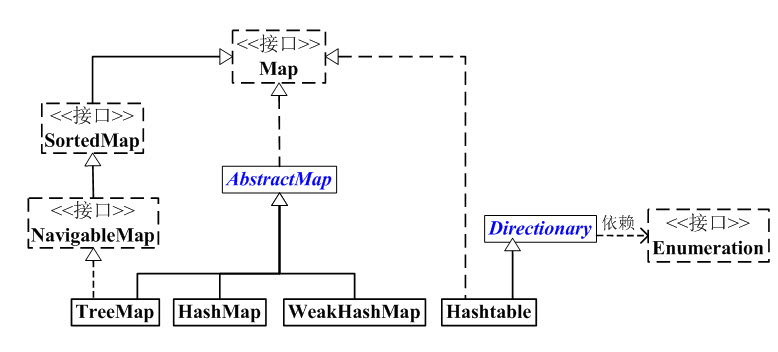
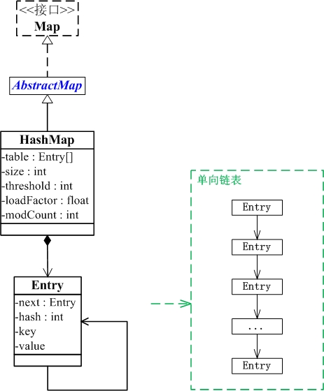
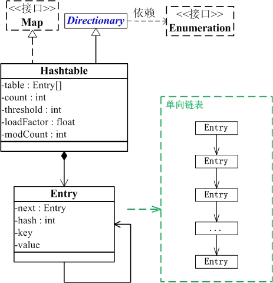
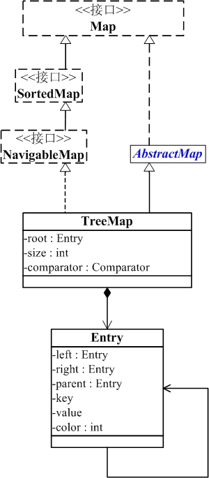
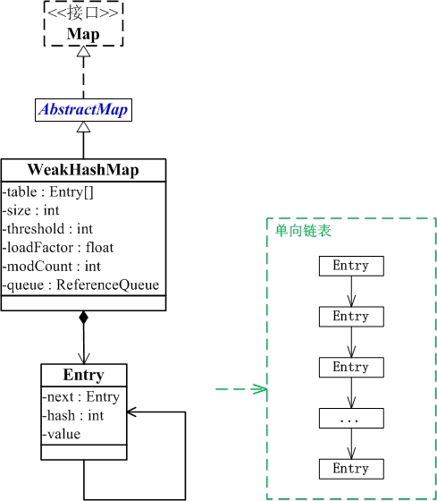

1. 基础概念

- Map 是映射接口，Map中存储的内容是键值对*(key-value)*。
- AbstractMap 是继承于Map的抽象类，它实现了Map中的大部分API。其它Map的实现类可以通过继承AbstractMap来减少重复编码。
- SortedMap 是继承于Map的接口。SortedMap中的内容是排序的键值对，排序的方法是通过比较器(Comparator)。
- NavigableMap 是继承于SortedMap的接口。相比于SortedMap，NavigableMap有一系列的导航方法；如”获取大于/等于某对象的键值对”、“获取小于/等于某对象的键值对”等等。
- TreeMap 继承于AbstractMap，且实现了NavigableMap接口；因此，TreeMap中的内容是“有序的键值对”！
- HashMap 继承于AbstractMap，但没实现NavigableMap接口；因此，HashMap的内容是“键值对，但不保证次序”！
- Hashtable 虽然不是继承于AbstractMap，但它继承于
Dictionary(Dictionary也是键值对的接口)，而且也实现Map接口；因此，Hashtable的内容也是“键值对，也不保证次序”。但和HashMap相比，Hashtable是线程安全的，而且它支持通过Enumeration去遍历。 - WeakHashMap 继承于AbstractMap。它和HashMap的键类型不同，WeakHashMap的键是“弱键”。
1.1 Map接口
1 | public interface Map<K,V> { } |
Map 是一个键值对(key-value)映射接口。Map映射中不能包含重复的键；每个键最多只能映射到一个值。
Map 接口提供三种collection 视图，允许以键集、值集或键-值映射关系集的形式查看某个映射的内容。
Map 映射顺序：有些实现类，可以明确保证其顺序，如 TreeMap；另一些映射实现则不保证顺序，如 HashMap 类。
Map 的实现类应该提供2个“标准的”构造方法：第一个，void（无参数）构造方法，用于创建空映射；第二个，带有单个 Map 类型参数的构造方法，用于创建一个与其参数具有相同键-值映射关系的新映射。
1.2 AbstractMap
1 | public abstract class AbstractMap<K,V> implements Map<K,V> {} |
AbstractMap类提供 Map 接口的骨干实现，以最大限度地减少实现此接口所需的工作。
1.3 SortedMap
1 | public interface SortedMap<K,V> extends Map<K,V> { } |
SortedMap是一个继承于Map接口的接口。它是一个有序的SortedMap键值映射。
排序方式有两种：
- 自然排序
- 用户指定比较器
插入有序 SortedMap 的所有元素都必须实现 Comparable 接口（或者被指定的比较器所接受）。
所有SortedMap 实现类都应该提供 4 个“标准”构造方法：
(01) void（无参数）构造方法，它创建一个空的有序映射，按照键的自然顺序进行排序。
(02) 带有一个 Comparator 类型参数的构造方法，它创建一个空的有序映射，根据指定的比较器进行排序。
(03) 带有一个 Map 类型参数的构造方法，它创建一个新的有序映射，其键-值映射关系与参数相同，按照键的自然顺序进行排序。
(04) 带有一个 SortedMap 类型参数的构造方法，它创建一个新的有序映射，其键-值映射关系和排序方法与输入的有序映射相同。无法保证强制实施此建议，因为接口不能包含构造方法。
1 | public interface NavigableMap<K,V> extends SortedMap<K,V> { } |
NavigableMap除了继承SortedMap的特性外，它的提供的功能可以分为4类：
提供操作键-值对的方法。
lowerEntry、floorEntry、ceilingEntry 和 higherEntry 方法，它们分别返回与小于、小于等于、大于等于、大于给定键的键关联的 Map.Entry 对象。
firstEntry、pollFirstEntry、lastEntry 和 pollLastEntry 方法，它们返回和/或移除最小和最大的映射关系（如果存在），否则返回 null。提供操作键的方法。
lowerKey、floorKey、ceilingKey 和 higherKey 方法，它们分别返回与小于、小于等于、大于等于、大于给定键的键。
获取键集
navigableKeySet、descendingKeySet分别获取正序/反序的键集。
获取键-值对的子集。
1.5 Dictionary
1 | public abstract class Dictionary<K,V> {} |
2.HashMap
2.1 基本概念
HashMap底层就是通过Entry数组+链表(JDK1.8 为数组+红黑树)实现的。
HashMap 是一个散列表，它存储的内容是键值对(key-value)映射。
HashMap 继承于AbstractMap，实现了Map、Cloneable、java.io.Serializable接口。
HashMap 的实现不是同步的，这意味着它不是线程安全的。它的key、value都可以为null。此外，HashMap中的映射不是有序的。
两个参数影响其性能：
- 初始容量：
- 加载因子
容量 是哈希表中桶的数量，初始容量 只是哈希表在创建时的容量。加载因子 是哈希表在其容量自动增加之前可以达到多满的一种尺度。当哈希表中的条目数超出了加载因子与当前容量的乘积时，则要对该哈希表进行 rehash 操作（即重建内部数据结构），从而哈希表将具有大约两倍的桶数。
默认加载因子是 0.75, 这是在时间和空间成本上寻求一种折衷。加载因子过高虽然减少了空间开销，但同时也增加了查询成本（在大多数 HashMap 类的操作中，包括 get 和 put 操作，都反映了这一点）。在设置初始容量时应该考虑到映射中所需的条目数及其加载因子，以便最大限度地减少 rehash 操作次数。如果初始容量大于最大条目数除以加载因子，则不会发生 rehash 操作。
2.2 数据结构
1 | public class HashMap<K,V> extends AbstractMap<K,V> |

HashMap是通过”拉链法“实现的哈希表。它包括几个重要的成员变量：table, size, threshold, loadFactor, modCount。
- table是一个Entry[]数组类型，而Entry实际上就是一个单向链表。哈希表的”key-value键值对”都是存储在Entry数组中的。
- size是HashMap的大小，它是HashMap保存的键值对的数量
- threshold是HashMap的阈值，用于判断是否需要调整HashMap的容量。threshold的值=”容量*加载因子”，当HashMap中存储数据的数量达到threshold时，就需要将HashMap的容量加倍。
- loadFactor就是加载因子。
- modCount是用来实现fail-fast机制的。
2.3 主要API实现
clear()的作用是清空HashMap。它是通过将所有的元素设为null来实现的。containsKey()的作用是判断HashMap是否包含key。通过getEntry(key)获取key对应的Entry，然后判断该Entry是否为null。HashMap将“key为null”的元素都放在table的位置0处，即table[0]中；“key不为null”的放在table的其余位置！
containsValue()的作用是判断HashMap是否包含“值为value”的元素。若“value为null”，则调用containsNullValue()。第二，若“value不为null”，则查找HashMap中是否有值为value的节点。
3.Hashtable
3.1基本概念
- 和HashMap一样，Hashtable 也是一个散列表，它存储的内容是键值对(key-value)映射。
- Hashtable 继承于Dictionary，实现了Map、Cloneable、java.io.Serializable接口。
- Hashtable 的函数都是同步的，这意味着它是线程安全的。它的key、value都不可以为null。此外，Hashtable中的映射不是有序的。
Hashtable 的实例有两个参数影响其性能：初始容量 和 加载因子。
容量 是哈希表中桶 的数量，初始容量 就是哈希表创建时的容量。注意，哈希表的状态为 open：在发生“哈希冲突”的情况下，单个桶会存储多个条目，这些条目必须按顺序搜索。加载因子 是对哈希表在其容量自动增加之前可以达到多满的一个尺度。初始容量和加载因子这两个参数只是对该实现的提示。关于何时以及是否调用 rehash 方法的具体细节则依赖于该实现。
“哈希冲突”：不同数字得到的哈希值可能相同，比如12，23，111，他们的哈希值都是1，这样就会导致大家也不知道这块数据存储的是哪个数，这就是哈希冲突，
哈希冲突的解决方法：
- 开放地址法
- 线性探测*:使用数组的构造方法，如果冲突的话就放到下一个存储单元**
- 平方探测**:当发生冲突的时，将冲突的序列放到 d,d+1^2, d-1^2, d+2^2, d-2^2
- 拉链方法（链地址法），将hash值相同的数据使用链表链接在一起
默认加载因子是 0.75, 这是在时间和空间成本上寻求一种折衷。
3.2 数据结构

和Hashmap一样，Hashtable也是一个散列表，它也是通过“拉链法”解决哈希冲突的。
4. TreeMap
4.1 基础概念
- TreeMap 是一个有序的key-value集合，它是通过红黑树实现的。
- TreeMap 继承于AbstractMap，所以它是一个Map，即一个key-value集合。
- TreeMap 实现了NavigableMap接口，意味着它支持一系列的导航方法。比如返回有序的key集合。
- TreeMap 实现了Cloneable接口，意味着它能被克隆。
- TreeMap 实现了java.io.Serializable接口，意味着它支持序列化。
TreeMap基于红黑树（Red-Black tree）实现。该映射根据其键的自然顺序进行排序，或者根据创建映射时提供的 Comparator 进行排序，具体取决于使用的构造方法。
TreeMap的基本操作 containsKey、get、put 和 remove 的时间复杂度是 log(n) 。
4.2 数据结构
1 | java.lang.Object |
TreeMap与Map关系如下图：

TreeMap的本质是R-B Tree(红黑树)，它包含几个重要的成员变量： root, size, comparator。
root是红黑数的根节点。它是Entry类型，Entry是红黑数的节点，它包含了红黑数的6个基本组成成分：key(键)、value(值)、left(左孩子)、right(右孩子)、parent(父节点)、color(颜色)。Entry节点根据key进行排序，Entry节点包含的内容为value。- 红黑数排序时，根据Entry中的key进行排序；Entry中的key比较大小是根据比较器
comparator来进行判断的。 size是红黑树中节点的个数。
5. WeakHashMap
5.1 基本概念
WeakHashMap 继承于AbstractMap，实现了Map接口。
和HashMap一样，WeakHashMap 也是一个散列表，它存储的内容也是键值对(key-value)映射，而且键和值都可以是null。
不过WeakHashMap的键是“弱键”。在 WeakHashMap 中，当某个键不再正常使用时，会被从WeakHashMap中被自动移除。更精确地说，对于一个给定的键，其映射的存在并不阻止垃圾回收器对该键的丢弃，这就使该键成为可终止的，被终止，然后被回收。某个键被终止时，它对应的键值对也就从映射中有效地移除了。
和HashMap一样，WeakHashMap是不同步的。可以使用
Collections.synchronizedMap方法来构造同步的 WeakHashMap。
这个“弱键”的原理呢？大致上就是，通过WeakReference和ReferenceQueue实现的。 WeakHashMap的key是“弱键”，即是WeakReference类型的；ReferenceQueue是一个队列，它会保存被GC回收的“弱键”。实现步骤是：
新建WeakHashMap，将“键值对”添加到WeakHashMap中。
实际上，WeakHashMap是通过数组table保存Entry(键值对)；每一个Entry实际上是一个单向链表，即Entry是键值对链表。
当某“弱键”不再被其它对象引用，并被GC回收时。在GC回收该“弱键”时，这个“弱键”也同时会被添加到ReferenceQueue(queue)队列中。
当下一次我们需要操作WeakHashMap时，会先同步table和queue。table中保存了全部的键值对，而queue中保存被GC回收的键值对；同步它们，就是删除table中被GC回收的键值对。
5.2 数据结构
1 | java.lang.Object |

WeakHashMap是哈希表，但是它的键是”弱键”。WeakHashMap中保护几个重要的成员变量：table, size, threshold, loadFactor, modCount, queue。
- table是一个Entry[]数组类型，而Entry实际上就是一个单向链表。哈希表的”key-value键值对”都是存储在Entry数组中的。
- size是Hashtable的大小，它是Hashtable保存的键值对的数量。
- threshold是Hashtable的阈值，用于判断是否需要调整Hashtable的容量。threshold的值=”容量*加载因子”。
- loadFactor就是加载因子。
- modCount是用来实现fail-fast机制的
- queue保存的是“已被GC清除”的“弱引用的键”。